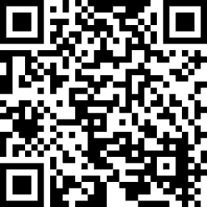

SolidarityConnect
Votre générosité propulse SolidarityConnect. Chaque don nous aide à développer et déployer l'intelligence artificielle au service de la formation, de l'emploi et de la lutte contre la précarité à Bavent, en Normandie, et au-delà.
Pour faire un don **simple et sécurisé**, scannez le QR code ci-dessous avec l'appareil photo de votre smartphone ou cliquez sur le bouton PayPal.

Vous n'avez pas d'application pour scanner ? Cliquez simplement ici :
Merci pour votre don